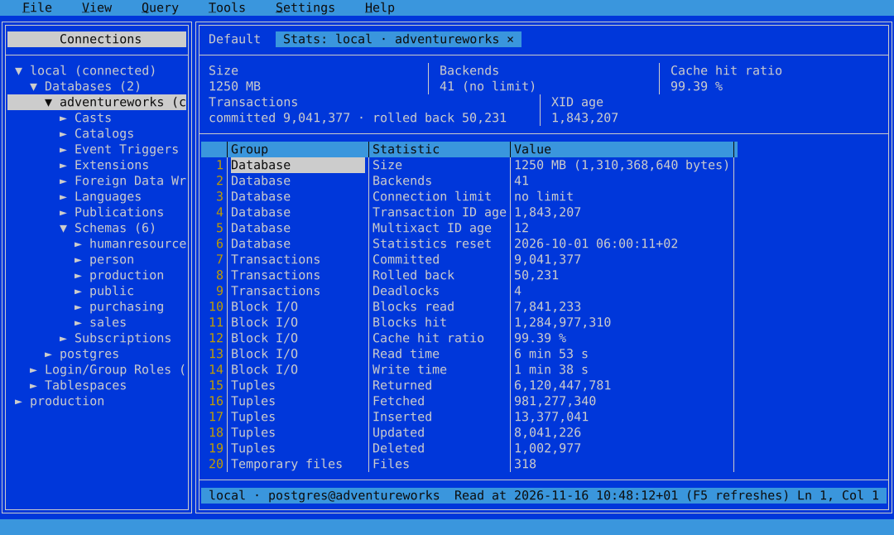

Database statistics
One database's rows in pg_stat_database and pg_stat_database_conflicts,
plus size, connection limit and XID ages from pg_database, formatted.

Opening the statistics
Alt+I on a database row of a connected server (not on rows inside it), or the context menu
(F2). One tab per database, with its own session on that database; the values are those of
current_database().
The values are read when you ask
No timer: one query when the tab opens and on each F5. The status row shows its
statement_timestamp() (server clock). All counters are cumulative since stats_reset.
The summary boxes
| Box | Source |
|---|---|
| Size | pg_database_size(). |
| Backends | numbackends and datconnlimit: 41 (no limit) or 41 / 100. The tab's own backend is counted. |
| Cache hit ratio | blks_hit / (blks_hit + blks_read), since the statistics reset. |
| Transactions | xact_commit, xact_rollback. |
| XID age | age(datfrozenxid). The backend holding back the xmin horizon is named on the dashboard. |
The list
| Group | Source |
|---|---|
| Database | pg_database_size(), numbackends, datconnlimit, age(datfrozenxid), mxid_age(datminmxid), stats_reset. |
| Transactions | xact_commit, xact_rollback, deadlocks. |
| Block I/O | blks_read, blks_hit, the hit ratio, blk_read_time, blk_write_time (0 unless track_io_timing = on). |
| Tuples | tup_returned, tup_fetched, tup_inserted, tup_updated, tup_deleted. |
| Temporary files | temp_files, temp_bytes. |
| Sessions (14+) | sessions, sessions_abandoned, sessions_fatal, sessions_killed, session_time, active_time, idle_in_transaction_time. |
| Checksums (12+) | checksum_failures, checksum_last_failure; checksums off without data checksums. |
| Parallel workers (18+) | parallel_workers_to_launch, parallel_workers_launched. |
| Recovery conflicts | conflicts and the confl_* columns of pg_stat_database_conflicts (logical slot: 16+). |
Groups the server version does not have are left out.
How values are written
Counts with thousands separators; sizes readable plus exact bytes (1250 MB (1,310,368,640 bytes));
times in the fitting unit; ratios in percent; NULL as [null].
Keys
| Key | |
|---|---|
| F5 | Read again; reconnect after a lost session. |
| Ctrl+C | Copy the cell; after Ctrl+A, the whole list, tab-separated. |
| F2 | Context menu. |
Where to look for more
Current activity: the server dashboard. Statement trace: the
SQL profiler. Per-relation statistics (pg_stat_user_tables)
have no tab; query them in a query tab.